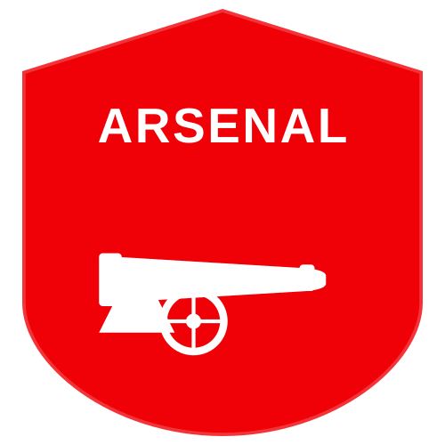

ARSENAL FC HISTORY아스날은 1886년에 다이얼 스퀘어(Dial Square)라는 이름으로 창단된 게 그 시초입니다. 런던 남동부에 있는 울리치의 왕립 조병창(Royal Arsenal)에서 일하던 노동자들이 모여 만든 것으로, 1891년에 프로 구단으로 독립했습니다. 1893년에는 울리치 아스날(Woolwich Arsenal)로 이름을 바꾸고 풋볼 리그에 가입했습니다.
재정적 어려움을 겪던 구단은 1913년 북런던의 하이버리로 연고지를 옮겼고, 이듬해 구단 명칭에서 울리치를 빼고 현재의 아스날 FC로 이름을 바꿨습니다. 이후 단 한 번도 2부 리그로 강등되지 않는 대기록을 현재진행형으로 세우고 있습니다.
1925년 임명된 허버트 채프먼 감독은 아스날의 첫 성공시대를 열었습니다. 그의 혁신적인 전술과 훈련을 바탕으로 1930년대 잉글랜드 축구를 지배했습니다. 1930년 첫 FA컵 우승과 1930-31, 31-32 시즌 리그 연속 우승을 차지했습니다.
1966년 물리 치료사 출신인 버티 미가 감독이 되면서 아스날은 다시 트로피를 차지합니다. 1970-71 시즌, 구단 역사상 첫 번째 FA컵과 리그 우승 더블을 일궈내며 황금기를 보냈습니다.
1986년 조지 그레이엄이 부임하며 제3의 중흥기를 맞이합니다. 토니 아담스를 주축으로 한 전설적인 '철의 포백' 수비진을 구축했습니다. 1988-89 시즌 리버풀과의 최종전 극적인 추가시간 골로 18년 만에 리그 우승을 차지한 사건은 아직도 회자되는 명장면입니다.
이후 데이비드 시먼을 영입하여 1990-91 시즌 단 1패만 기록하며 다시 리그 우승을 차지했고, 92-93 시즌에는 컵 더블을 기록했습니다.
1996년, 프랑스 출신의 아르센 벵거가 부임하며 클럽의 모든 것이 바뀌었습니다. 화려하고 아름다운 패스 축구로 팀 컬러를 혁신했고, 티에리 앙리, 데니스 베르캄프 등 전설적인 선수들과 함께 리그 정상에 섰습니다.
특히 2003-04 시즌, 프리미어리그 사상 최초이자 유일한 무패 우승(The Invincibles)이라는 위대한 업적을 달성했습니다. 1889년 이후 115년 만에 나온 이 기록은 49경기 연속 무패 행진으로 이어지며 잉글랜드 축구 역사에 영원히 각인되었습니다.